Here is the download link for the R script for this lecture: Spatial Capture-Recapture
Abundance and density of an animal population is integral to their conservation and management. These parameters can be difficult to estimate when individuals cannot be observed perfectly.
Spatially Explicit Capture-Recapture models “estimate the density and size of a spatially distributed animal population sampled with an array of detectors, such as traps, or by searching polygons or transects.”
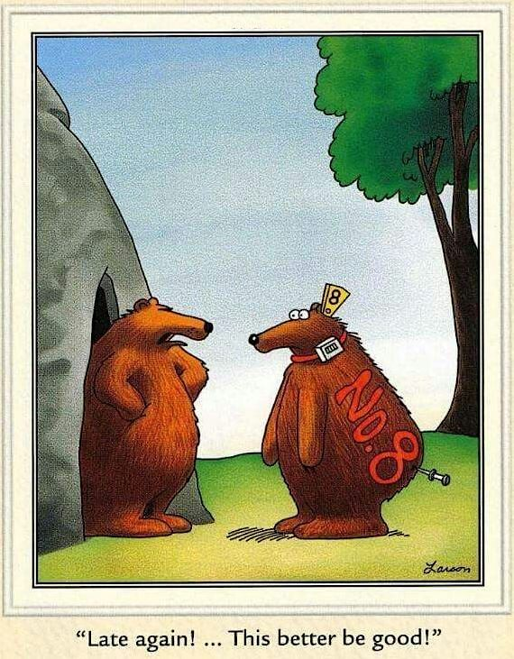
A century old technique that is the primary way for researchers and managers to estimate population size and demographic processes. CR uses individual-level detection data, in the form of presence and absence.
Examples of CR:
(video of ants!)
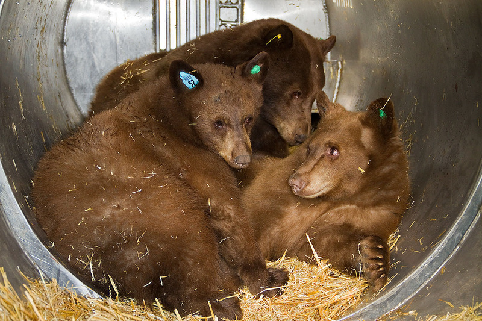
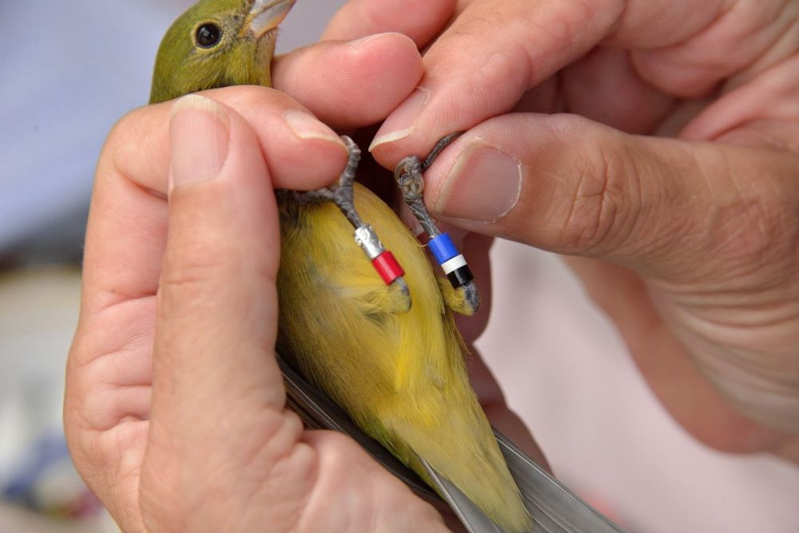 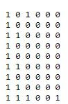
Population abundance estimate:
The Lincoln-Peterson Method is used to estimate populations with 2 capture occasions. \[ \hat{N}=\frac{nK}{k} \] Where:
\(\hat{N}\)=population abundance estimate
\(n\)= animals marked on the first occasion
\(K\)= animals encountered on the second occasion
\(k\)= marked animals on the second occasion
Survival and detection probability estimates:
Individual encounter events (\(y_{ik}\)) are Bernoulli trials
\[ y_{ik}\sim Bernoulli(p_{ik}) \]
Each individual has an equal chance of being captured
Marking does not influence an individual’s chance of being recaptured
Births and immigration do not occur between the marking and recapture efforts
Marks are not lost between capture and recapture
Does not admit the spatial structure of the ecological processes that give rise to the encounter history data, nor the spatial aspect of data collection
The parameter \(N\) is unrelated to any notion of the sample area, resulting in arbitrary guesses as area
Does not provide information relating to movement, space usage, resource selection, etc.
Too simple!
Movement estimates are based off of the trapping grid
What if we were trying to estimate the population of a sensitive species? Would this be acceptable?
A new “revolutionary” way to study animal populations. SECR overcomes the edge effects that occur in CR models. SECR allows us to define a point process and its state space, which allows an accurate density estimate, giving context to the population size.
Examples of detectors:
Live traps
Sticky traps/snags that collect hair
Cameras
Scat sampling
Polygon or transect surveys
Acoustics
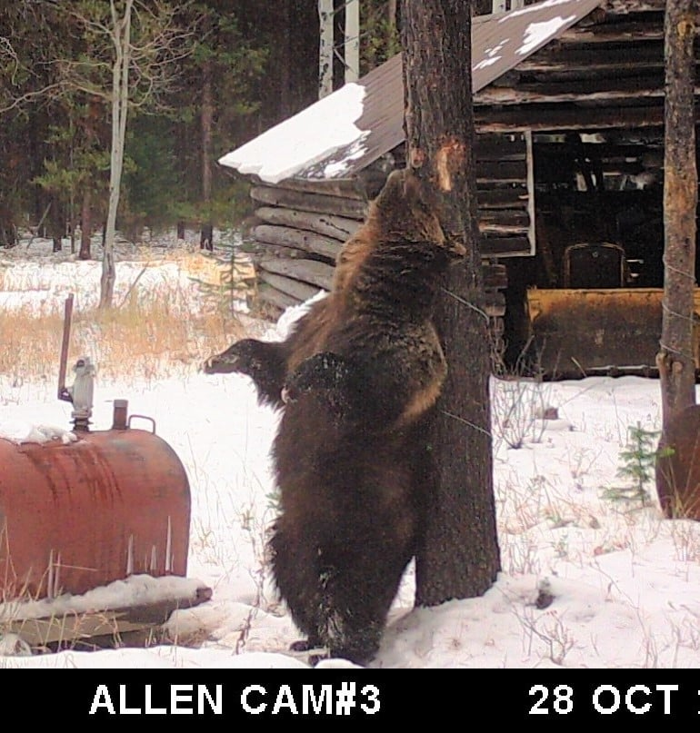 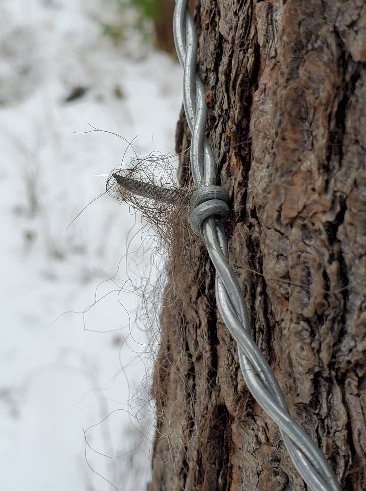
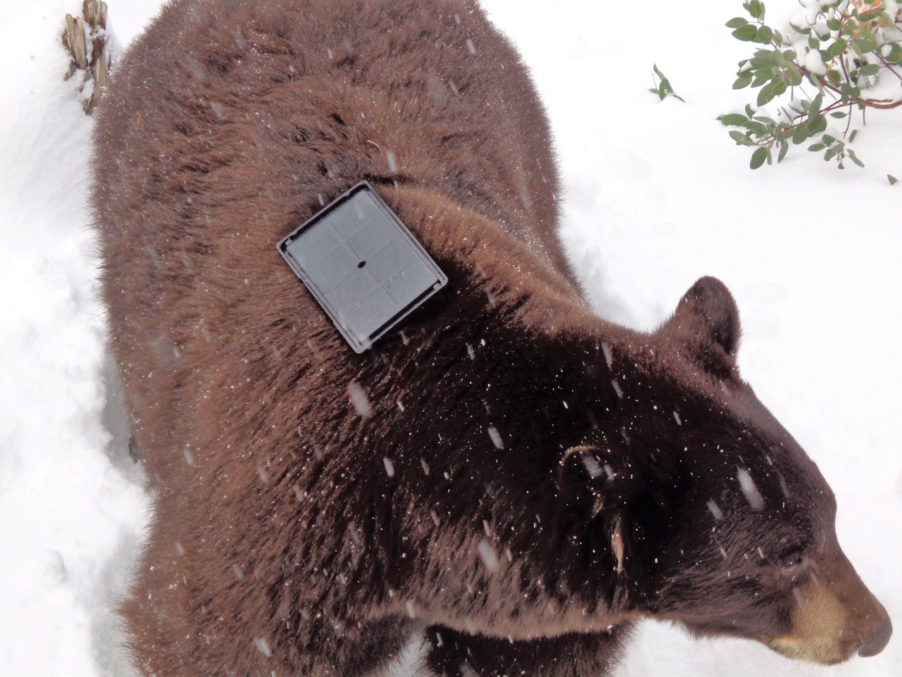
Influence of trap type on detection 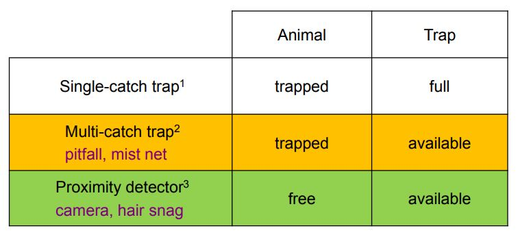
SECR models can be used anytime animal recaptures are recorded but using a grid design is the most common
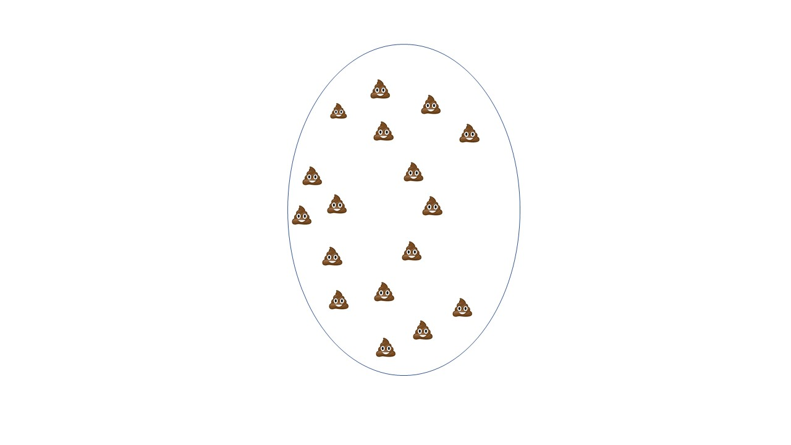 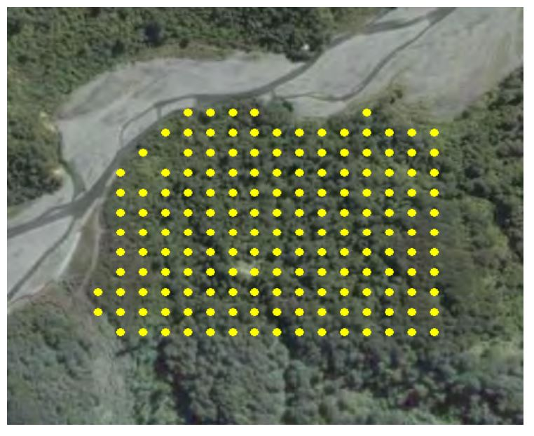
Demographic closure: there is no recruitment or mortality in the sampled population
Geographic closure: there is no emigration or immigration from the state-space. However, SECR allows for “temporary” movements around the state-space
Activity centers are randomly disbursed
Detection is a function of distance: the encounter probability declines as a function of distance from an individual’s activity center
Independence of encounters among individuals
Independence of encounters of the same individual
SECR models are a combination of state and observation models
observation model: spatially explicit model for encounter history data
Elements of SECR data collection:
\(i\) individuals
\(j\) traps
\(k\) occasions
state model: spatially explicit model for the distribution of individuals (\(s\): activity centers!)
Choosing a prior distribution for \(s\):
Homogenous point process (HPP): activity centers are distributed independent of one another and uniformly in the plane
Inhomogenous point process (IPP): local point density depends on habitat covariates
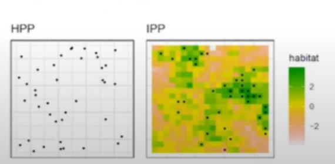
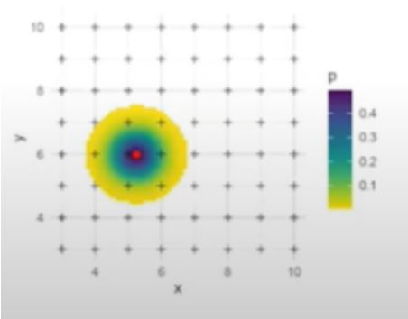
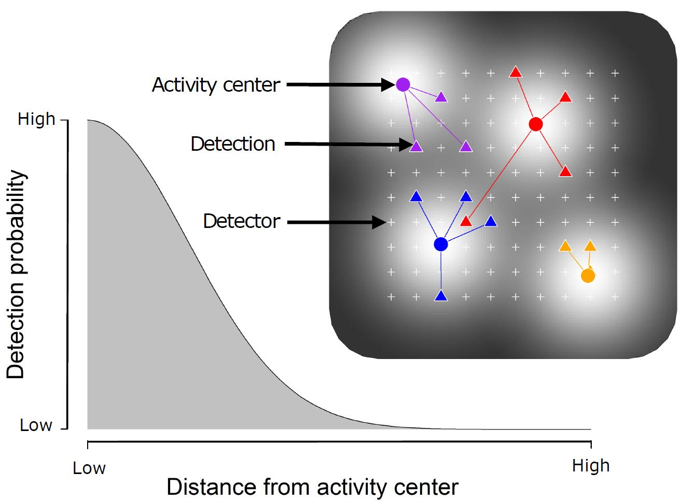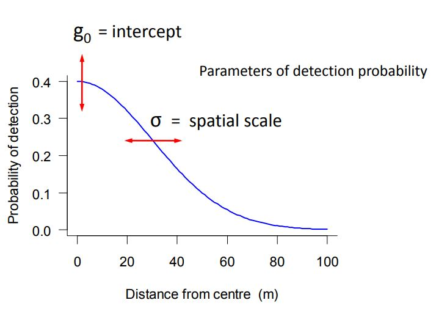
Capture probability is a function of the distance between the activity center, \(s_{i}\) and the traps, \(x_{j}\) \[ y_{ijk}|s_{i}\sim Bernoulli(p||x_{j}-s_{i}||) \]
Activity centers are uniformly distributed (in the 2D plane) \[ s_{i}\sim Uniform(S) \]
A simple example!
Snowshoe hare capture by Burham and Cushwa:
Live trapping grid north of Fairbanks, AK in 1972
10 x 10 grid with traps placed 200 ft (61m) apart
Traps were set for 9 consecutive days in early winter. They were baited after the 3rd day so this example dismisses the first 3 days
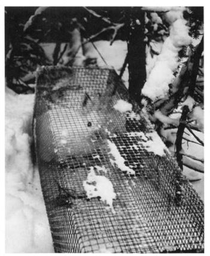
library(secr)## Warning: package 'secr' was built under R version 4.1.1Primary data:
Encounter data, containing a record of which animals were encountered at which trap and on what occasion
Trap deployment data, containing the spatial coordinates of each trap
capture.history<-read.table("hareCH6capt.txt",col.names = c("Session","ID","Occasion","Detector"))
head(capture.history)## Session ID Occasion Detector
## 1 wickershamunburne 1 2 201
## 2 wickershamunburne 19 1 501
## 3 wickershamunburne 72 5 601
## 4 wickershamunburne 73 6 601
## 5 wickershamunburne 2 2 701
## 6 wickershamunburne 60 3 701trap.data<-read.table("hareCH6trap.txt",col.names = c("Detector","x","y"))
head(trap.data) ##note that the x,y information is given in meter distances, do NOT use latitude/longitude## Detector x y
## 1 101 0.00 0
## 2 201 60.96 0
## 3 301 121.92 0
## 4 401 182.88 0
## 5 501 243.84 0
## 6 601 304.80 0Create a capture history object to work with (observation model)
hare.secr<-read.capthist("hareCH6capt.txt","hareCH6trap.txt",detector = "single")## No errors found :-)Let’s take a look at the object!
summary(hare.secr)## Object class capthist
## Detector type single
## Detector number 100
## Average spacing 60.96 m
## x-range 0 548.64 m
## y-range 0 548.64 m
##
## Counts by occasion
## 1 2 3 4 5 6 Total
## n 16 28 20 26 23 32 145
## u 16 24 9 9 6 4 68
## f 25 22 13 5 1 2 68
## M(t+1) 16 40 49 58 64 68 68
## losses 0 0 0 0 0 0 0
## detections 16 28 20 26 23 32 145
## detectors visited 16 28 20 26 23 32 145
## detectors used 100 100 100 100 100 100 600plot(hare.secr, tracks = TRUE) 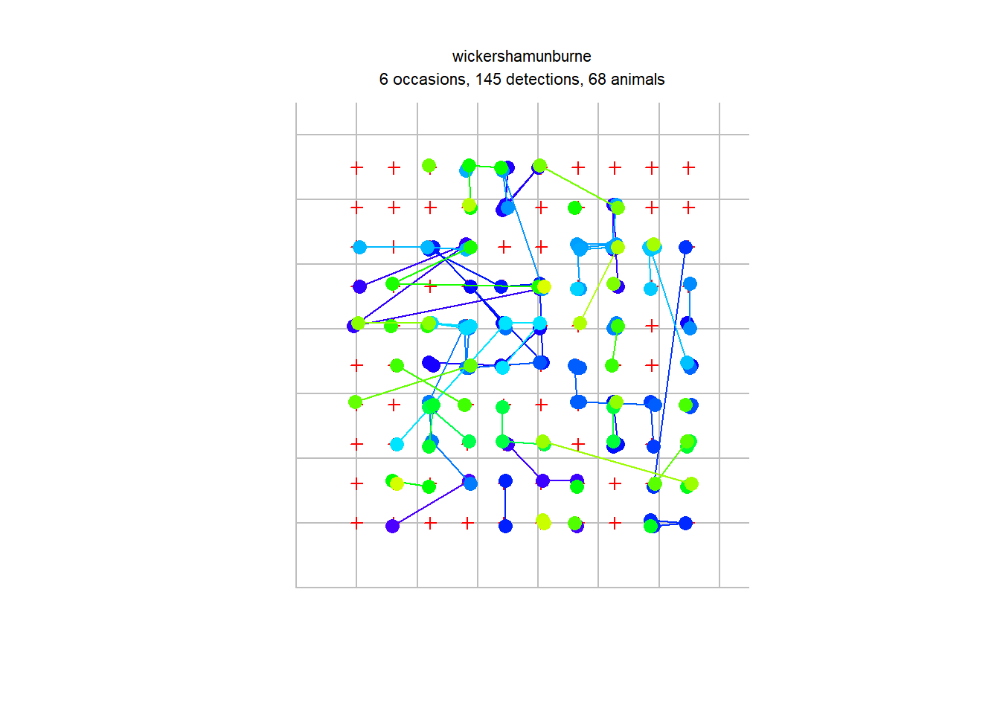
We can look at a histogram of successive movements
movements <- unlist(moves(hare.secr))hist(movements, breaks = seq(-61/2, 500,61), xlab = "Movement", main = "") #another illustration that majority of movements are within 100m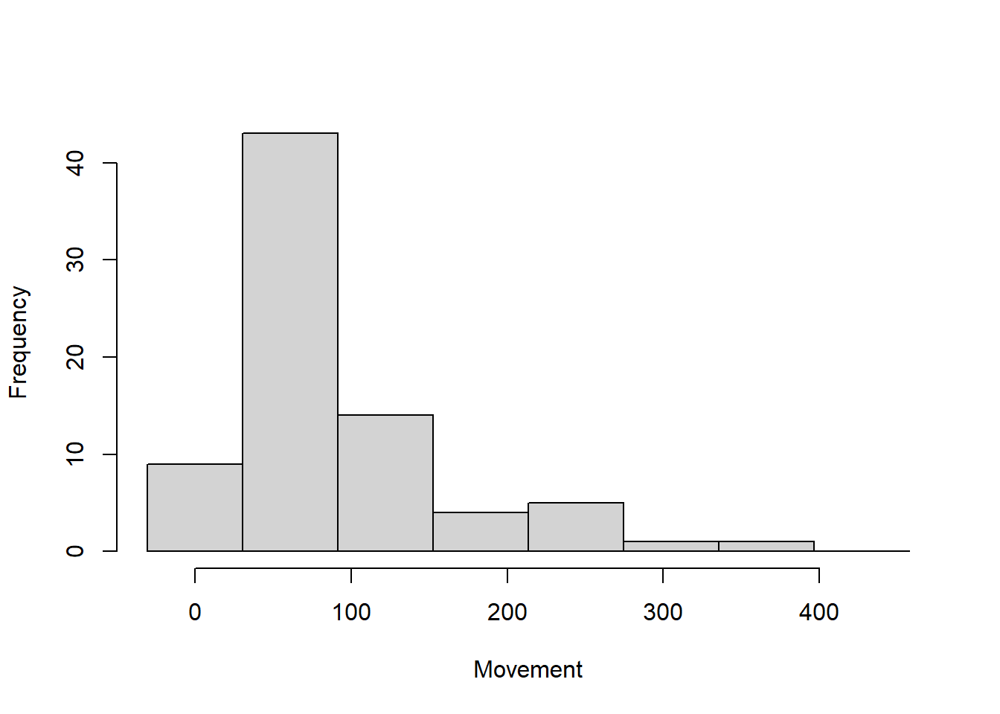
Next, secr can give us a quick and biased estimate of sigma, ignoring the issue of movements being truncated by the edge of the grid
initialsigma <- RPSV(hare.secr, CC = TRUE)
cat("Quick and biased estimate of sigma =", initialsigma, "m\n") #our spatial scale parameter that determines how rapidly capture probability declines with distance AKA our state model ## Quick and biased estimate of sigma = 63.66117 mNow we can fit a VERY simple SECR model!
fit <- secr.fit (hare.secr, buffer = 4 * initialsigma, trace = FALSE) 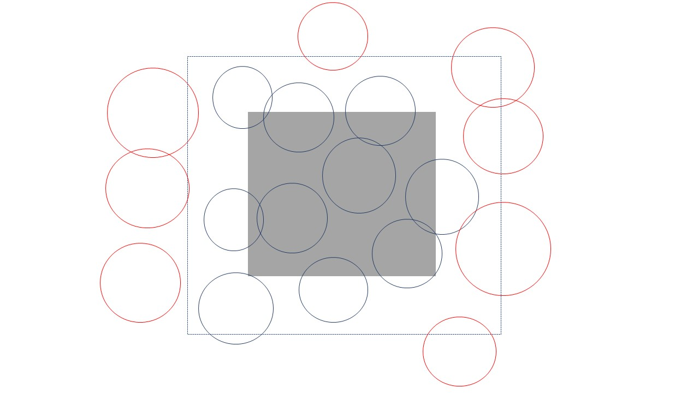
esa.plot(fit)
abline(v = 4 * initialsigma, lty = 2, col = 'red') 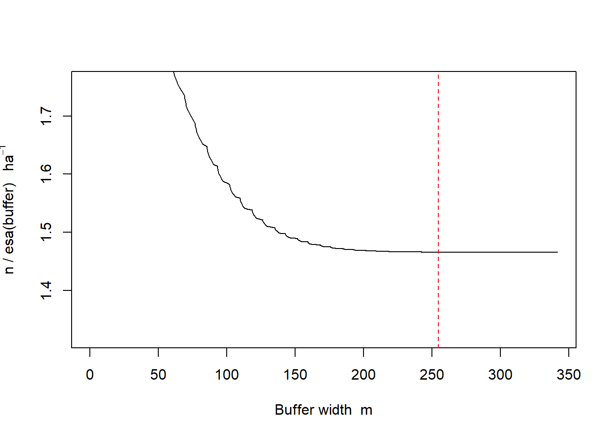
#The theory of SECR tells us that buffer width is not critical as long as it is wide enough that animals with activity centers close to the edge of the buffer have effectively zero chance of appearing in our sample.
#We can check this with the function esa.plot and see that the estimated density has easily reached a plateau at the chosen buffer width (dashed red line)print(fit)##
## secr.fit(capthist = hare.secr, buffer = 4 * initialsigma, trace = FALSE)
## secr 4.4.7, 10:55:17 10 Nov 2021
##
## Detector type single
## Detector number 100
## Average spacing 60.96 m
## x-range 0 548.64 m
## y-range 0 548.64 m
##
## N animals : 68
## N detections : 145
## N occasions : 6
## Mask area : 106.1286 ha
##
## Model : D~1 g0~1 sigma~1
## Fixed (real) : none
## Detection fn : halfnormal
## Distribution : poisson
## N parameters : 3
## Log likelihood : -607.9883
## AIC : 1221.977
## AICc : 1222.352
##
## Beta parameters (coefficients)
## beta SE.beta lcl ucl
## D 0.382512 0.12995433 0.1278062 0.6372178
## g0 -2.723728 0.16091321 -3.0391117 -2.4083435
## sigma 4.224543 0.06530755 4.0965429 4.3525438
##
## Variance-covariance matrix of beta parameters
## D g0 sigma
## D 0.016888127 -0.001729427 -0.001624203
## g0 -0.001729427 0.025893061 -0.007372130
## sigma -0.001624203 -0.007372130 0.004265076
##
## Fitted (real) parameters evaluated at base levels of covariates
## link estimate SE.estimate lcl ucl
## D log 1.46596251 0.191315338 1.13633280 1.89121188
## g0 logit 0.06158768 0.009299921 0.04568989 0.08253867
## sigma log 68.34328742 4.468096141 60.13204534 77.67580347#The printed report gives us the following useful information:
# function call and time stamp
# summary of the data
# model description (with log likelihood and AIC)
# estimates of the coefficients
# estimates of covariance matrix of coefficients
# estimates of the real parametersEstimated density is 1.47 hares per hectare, 95% CI between 1.14-1.89. The detection function is jointly determined by \(g_{0}\), the intercept of the detection probability, and \(\sigma\), the spatial scale.
plot(fit, limits = TRUE) 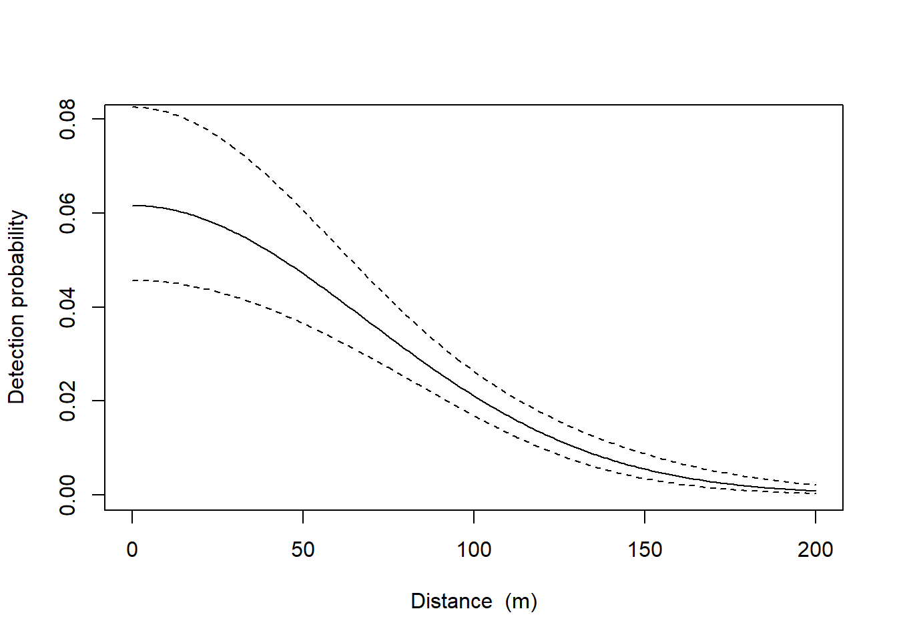
Now we can add a detection function to the model!
There are 20 detection functions included in the package, some are used only for acoustic data, some do not decline monotonically, etc.
Let’s look at half-normal and negative exponential
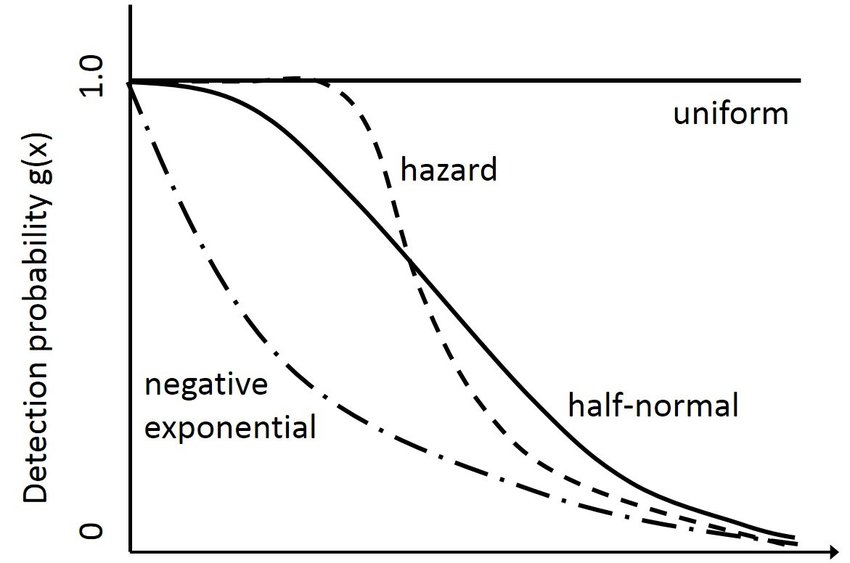
fit.halfnormal <- secr.fit (hare.secr, buffer = 4 * initialsigma, detectfn = 'HN', trace = FALSE)
fit.negative.exponential <- secr.fit (hare.secr, buffer = 4 * initialsigma, detectfn = 'EX', trace = FALSE)
fits <- secrlist(HN = fit.halfnormal, EX = fit.negative.exponential)#compare the models
predict(fits)## $HN
## link estimate SE.estimate lcl ucl
## D log 1.46596243 0.191315356 1.13633269 1.89121184
## g0 logit 0.06158769 0.009299908 0.04568991 0.08253865
## sigma log 68.34328831 4.468093572 60.13205063 77.67579865
##
## $EX
## link estimate SE.estimate lcl ucl
## D log 1.4795947 0.19470072 1.1444928 1.9128128
## g0 logit 0.1805312 0.03154027 0.1266829 0.2506977
## sigma log 39.9017318 3.33367368 33.8844127 46.9876287AIC(fits)## model detectfn npar logLik AIC AICc dAICc AICcwt
## EX D~1 g0~1 sigma~1 exponential 3 -601.6335 1209.267 1209.642 0.00 1
## HN D~1 g0~1 sigma~1 halfnormal 3 -607.9883 1221.977 1222.352 12.71 0How can we make the model more accurately reflect our population? There are “model” arguments within the secr.fit function to account for learned responses, spatial variation, group trends, etc:
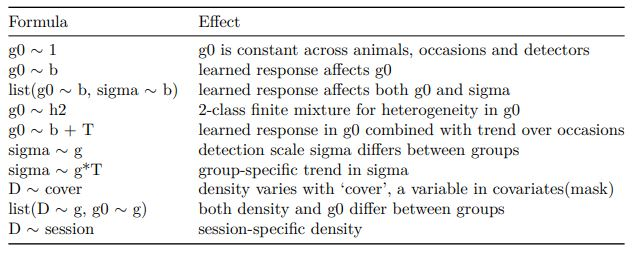
In this example we look at polygon and transect detectors
library(gstat)
lizard<-hornedlizardCH
head(lizard)## Session = 1
## , , 1
##
## 1 2 3 4 5 6 7 8 9 10 11 12 13 14
## 1 0 0 0 0 0 0 0 1 0 0 0 0 0 0
## 2 0 0 0 0 0 0 0 1 0 0 0 0 0 0
## 3 0 0 0 0 0 0 0 1 0 0 0 0 0 0
## 4 0 0 0 0 0 0 0 1 0 0 0 0 0 0
## 5 0 0 0 0 0 0 0 0 0 0 0 0 1 0
## 6 0 0 0 0 0 0 0 0 0 0 0 0 1 0par(mar=c(1,1,2,1))
plot(hornedlizardCH, tracks = TRUE, varycol = FALSE, lab1cap = TRUE, laboffset = 8,
border = 10, title ='')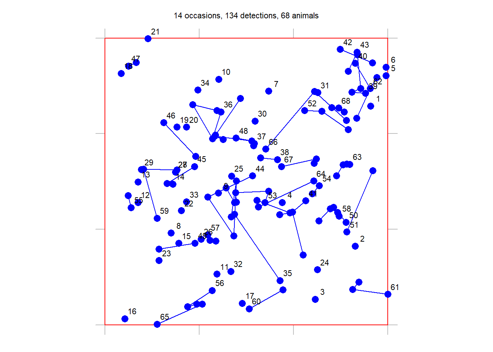
Fit and plot a basic model:
FTHL.fit <- secr.fit(hornedlizardCH, buffer = 80, trace = FALSE)
predict(FTHL.fit)## link estimate SE.estimate lcl ucl
## D log 8.0130680 1.06170100 6.1873999 10.3774218
## lambda0 log 0.1317132 0.01512831 0.1052403 0.1648453
## sigma log 18.5049025 1.19938839 16.2995006 21.0087060plot(FTHL.fit, xv = 0:80, xlab = "Distance (m)", ylab = 'p', main="Probability of detection")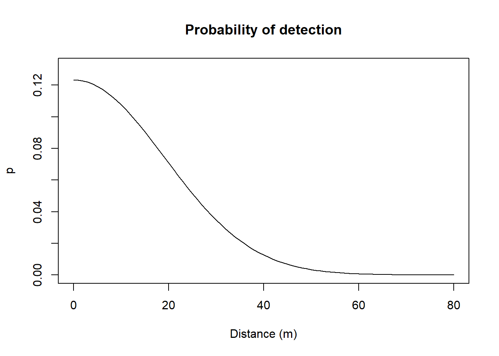
Cue data for animals with 1 occasion :
datadir <- system.file("extdata", package = "secr")
examplefile1 <- paste0(datadir, '/polygonexample1.txt')
polyexample1 <- read.traps(file = examplefile1, detector = 'polygon')
polygonCH <- sim.capthist(polyexample1, popn = list(D = 1, buffer = 200),
detectfn = 'HHN', detectpar = list(lambda0 = 5, sigma = 50),
noccasions = 1, seed = 123)
par(mar = c(1,2,3,2))
plot(polygonCH, tracks = TRUE, varycol = FALSE, lab1cap = TRUE, laboffset = 15,
title = paste("Simulated 'polygon' data", "D = 1, lambda0 = 5, sigma = 50"))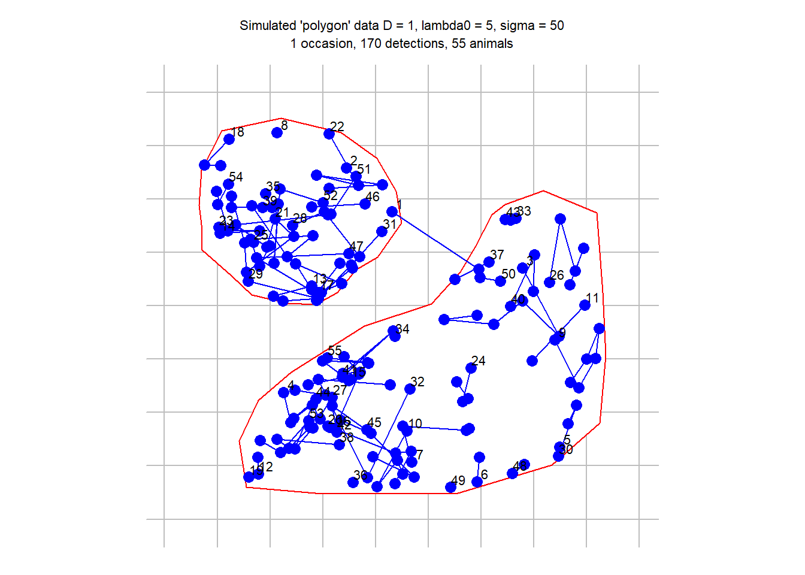
#cuesim.fit <- secr.fit(polygonCH, buffer = 200, trace = FALSE) #Takes a long time to run!
#predict(cuesim.fit)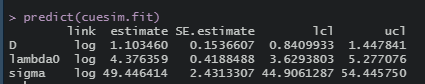
Convert the polygon data into raster representation
discreteCH <- discretize (polygonCH, spacing = 20)## Warning: count data converted to binary; information may be lostpar(mar = c(1,2,3,2))
plot(discreteCH, varycol = FALSE, tracks = TRUE)## Warning in plot.capthist(discreteCH, varycol = FALSE, tracks = TRUE): track for
## repeat detections on same occasion joins points in arbitrary sequence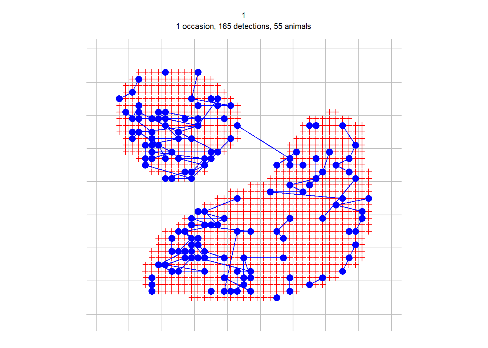
discrete.fit <- secr.fit(discreteCH, buffer = 200, detectfn = 'HHN', trace = FALSE)## Warning in dpois(data$nc, N * meanpdot, log = TRUE): NaNs producedpredict(discrete.fit)## link estimate SE.estimate lcl ucl
## D log 1.0953488 0.15276747 0.83446347 1.4377970
## lambda0 log 0.1120451 0.01449157 0.08704767 0.1442209
## sigma log 49.8385750 2.67401656 44.86714624 55.3608547Polygon concavity:
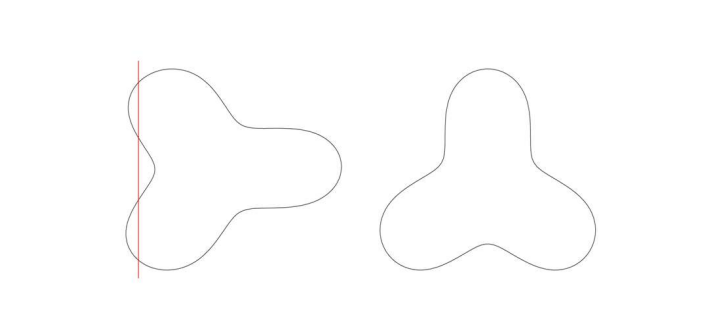
examplefile2 <- paste0(datadir, '/polygonexample2.txt') #this txt file is within secr package
polyexample2 <- read.traps(file = examplefile2, detector = 'polygon')
par(mfrow = c(1,2), mar = c(2,1,1,1))
plot(polyexample2)
text(polyexample2$x, polyexample2$y, 1:nrow(polyexample2), cex = 0.7)
newpoly <- make.poly (list(p1 = polyexample2[11:23,],
p2 = polyexample2[c(1:11, 23:27),]))## No errors found :-)plot(newpoly, label = TRUE)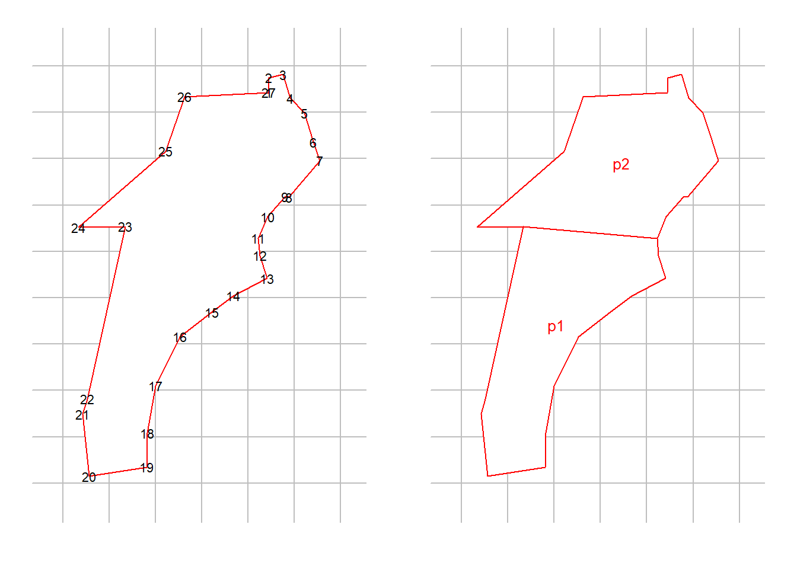
A taste of what is to come: our group project will be taking NDOW’s 20+ year dataset of CR and (hopefully!) applying it to a SECR framework.
Nevada’s bear population is has a wide estimate (400-700 bears). Our CR model says 452 bears as of 2018 within a designated study area. We have 452 bears “in the study area” but beyond those boundaries there are more. So we may have up to 700 bears. Not a very confident-sounding statement for an animal that is highly politicized and the public is constantly asking for scientific data to back up management.
References:
Efford, M.G. (2010). SECR: spatially explicit capture-recapture in R. Dunedin: Department of Zoology, University of Otago.
Efford, M.G. (2019). A tutorial on fitting spatially explicit capture-recapture models in secr. Dunedin: Department of Zoology, University of Otago.
Efford, M.G. (2021). Polygon and transect detectors in secr 4.4. Dunedin: Department of Zoology, University of Otago.
Otis, D.L, Burnham, K.P., White, G.C., and Anderson, D.R. (1978) Statistical inference from capture data on closed animal populations. Wildlife Monographs No. 62.
Royle, A.J. Andrew. et al. Spatial Capture-Recapture. Boston: Elsevier, 2013. Print.
Royle, A.J. (2016) Spatial Capture-Recapture Modeling. https://www.youtube.com/watch?v=4HKFimATq9E&t=1s
Royle, A.J. (2020) Introduction to Spatial Capture-Recapture. https://www.youtube.com/watch?v=yRRDi07FtPg